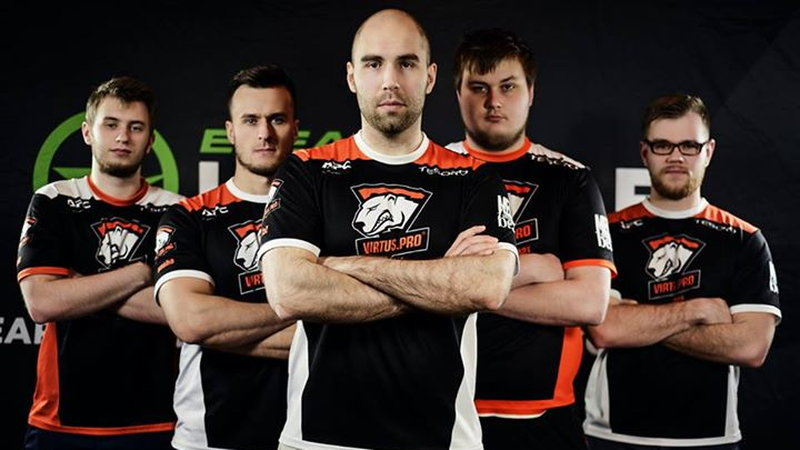
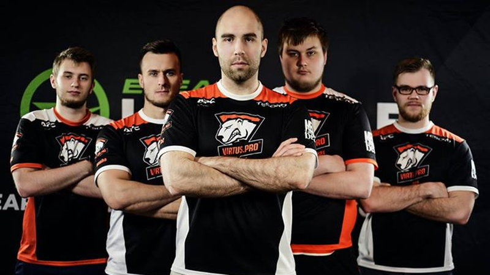

Now I will talk about my hobby and what I do when not working or studying and when im sitting inside. Counter Strike is my favorite game and the latest edition of it, CS:GO went out in 2012.The e-sport is growing and Poland have a team in CS:GO. The team is called Virtus.Pro. It consists of five players: Jarosław "Pasha" Jarząbkowski, Wiktor"Taz" Wojtas, Janusz "Snax" Pogorzelski, Paweł"byali" Bieliński and Filip"Neo"Kubski. All of these players started from CS 1.6 which came out in 2000. The CS:GO game is almost the same game as 1.6 mechanicaly, with just the engines changing. This is why I think the game is so successful. This is a team competative skilled based game which means that you have to be really good to perform at the top level. There was a tournament on in Cluj-Napoca in Romanania this week and hence why this project is getting uploaded so late. CS is my passion and what I do in the time I'm not busy with life.
Click on the youtube icon to see why CS is so amazing, for me anyway.
 
